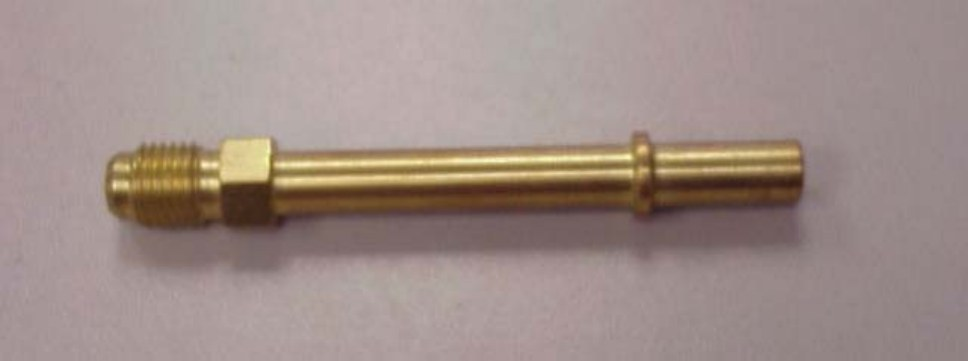
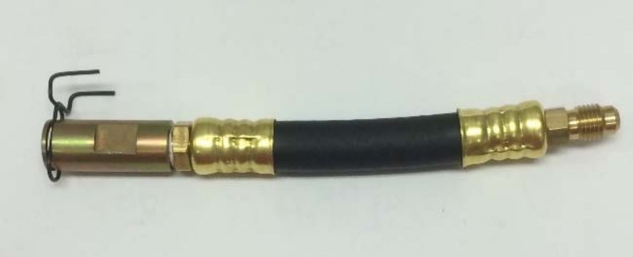

Doc no. MOC-TSB-15-20 // Vol. 15 No. 20 // Dec 9, 2015 // Fuel
Jaguar Fuel Adapter Kit Updated
7301373055
MOC has added 2 adapters to the Jaguar fuel adapter kit (Part No. 73013). These 2 adapters were added to perform services on the Jaguar 5.0L direct injection engines. The 5.0L engines are returnless fuel systems and will need Part No. 73055 (See TSB Vol 15 No 12). The 2 adapters added to the kit are Part No. 72101, which is the 5/16" male quick disconnect adapter, and Part No. 73060, which is the 5/16" female quick disconnect adapter.
What's new
Contact
For more information, contact the Machine & Equipment Department at 866.244.6621.


Part numbers
| Part No. | Description | Notes |
|---|---|---|
| 72101 | Adapter, Fuel, 5/16" Male Quick Disconnect | |
| 73060 | Adapter, Fuel, 5/16" Female Quick Disconnect | |
| 73013 | Jaguar fuel adapter kit | |
| 73055 | Tool, Fuel Pump Bypass |